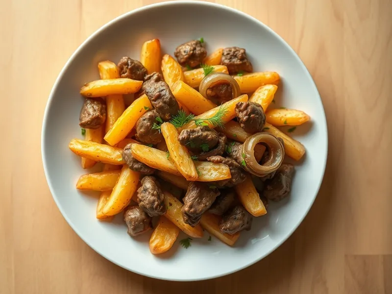

Жареная картошка с куриной печенью и луком
Румяная жареная картошка с нежной куриной печенью и золотистым луком
30 мин3 порц.580 ккал на порциюБ 31 · Ж 29 · У 48Русская кухня
Открыть в приложении: порции, таймеры, список покупок
Продукты на 3 порц.
- Картофель6 шт
- Куриная печень400 г
- Лук репчатый1 шт
- Мука пшеничная1 ст. л.
- Растительное масло4 ст. л.
- Соль1 ч. л.
- Перец чёрный молотый1 щеп.
- Укроп по желаниюпо вкусу
Как готовить
- Картофель нарежьте брусочками, промойте и обсушите полотенцем. Лук нарежьте полукольцами. Печень промойте, срежьте плёнки, нарежьте кусочками по 3 см и обсушите.
- Разогрейте 3 ст. л. масла в большой сковороде на сильном огне, выложите картофель и жарьте 5 минут, не трогая. Затем убавьте огонь до среднего и жарьте 10-12 минут, переворачивая раз в 3-4 минуты, до золотистой корочки и мягкости внутри. Посолите в конце.
- Тем временем во второй сковороде разогрейте оставшееся масло и обжарьте лук на среднем огне 4 минуты до золотистого цвета.
- Обваляйте печень в муке, добавьте к луку и жарьте 4-5 минут, переворачивая, пока снаружи не появится корочка, а на разрезе печень не станет однородной без кровяных прожилок. Посолите и поперчите.
- Выложите печень с луком на картошку, аккуратно перемешайте, прогрейте 1 минуту и посыпьте укропом.
Совет. Солите печень только в самом конце: соль в начале вытягивает сок, и печень становится жёсткой.